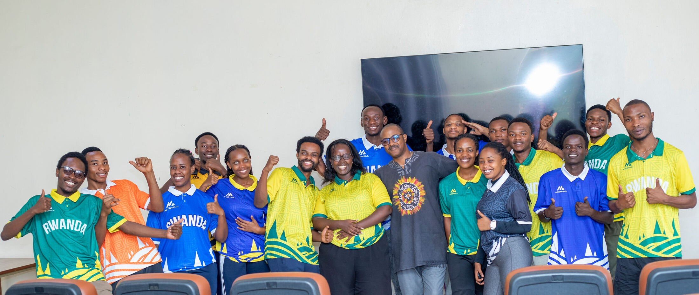

Medwell Health Magazine
Africa's Leading Youth-Driven Multilingual Health Media Platform.
medwellnews.com
The people caring for the sick deserve care too.
Each month, our activities become a new chapter in the MEDWELL CLUB journey, toward healthier medical education and healthier healthcare professionals.
Explore Chapter ReportsPause. Reconnect. Reflect.
Wellness Retreat · How to Prioritize Self-Care in Medical Education
Africa's Leading Youth-Driven Multilingual Health Media Platform.
medwellnews.comWelcome to Medwell Podcast. We break down the topics that matter most, wellness, first aid, sexual and reproductive health, and the biggest trends in health news, so you always know what's real, what's helpful, and what's new. Empowering you to live smarter, healthier and more confidently.
YouTube · @THEMEDWELLPODCASTOur Medwell Club family volunteers as writers, editorial team members, hosts and speakers on these health media platforms.
We can't pour from an empty cup,
Healthcare Providers deserve care too.
There's a place in MEDWELL Club at every stage of the journey, as a student, a practicing professional, or simply someone who believes healthcare providers deserve care too.